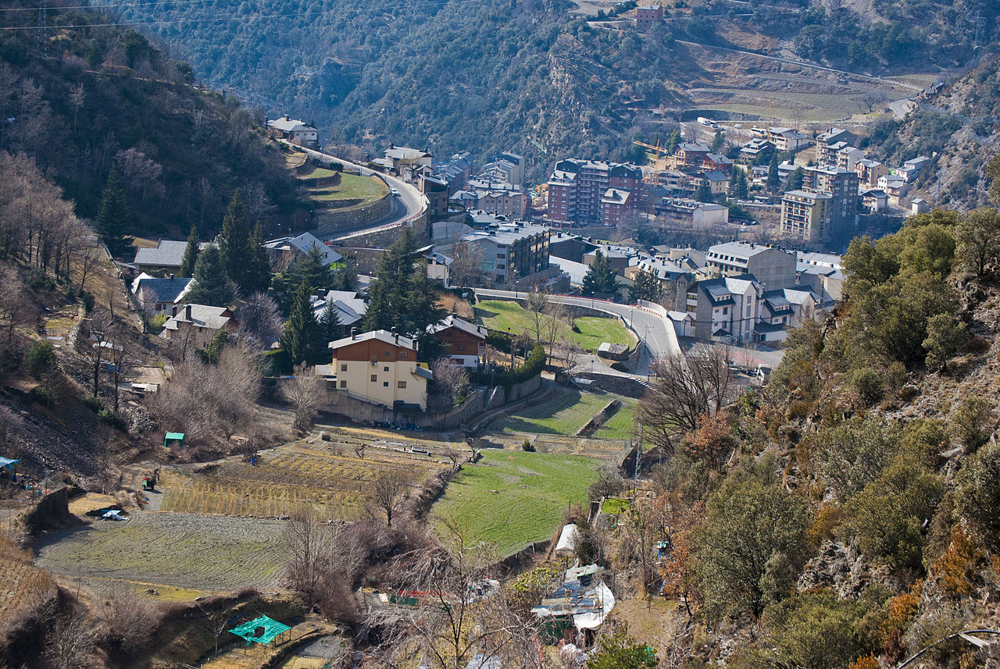

Sant Julià de Lória
- Naturlandia
- Jardines de Juberri
-
Os de Civís

Os de Civís es una curiosidad única que si estáis por aquí creo que merece la pena visitar. Se trata de el único PERICLAVE de España (un trozito de España, al cual tan sólo se puede acceder desde Andorra, concrétamente desde San Julián).
El pueblo por sí mismo merece la pena, además de disponer de un restaurante tanto con comida como con vistas espectaculares (al final de la carretera), es divertido y curioso ver el cartel oficial de "España/Unión Europea", al entrar en la aldea.
Por cierto, cuando entréis de Andorra en Os de Civís, tened en cuenta que vuestros teléfonos móviles volverán a funcionar, cosa que en Andorra no.